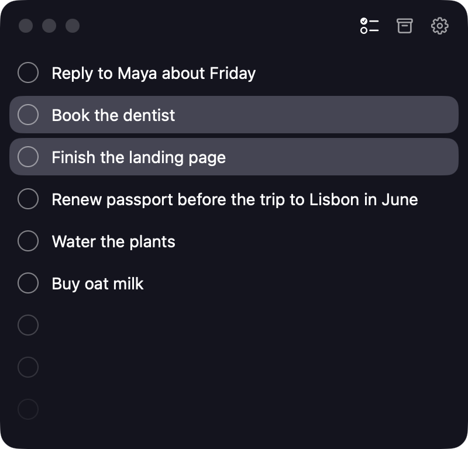
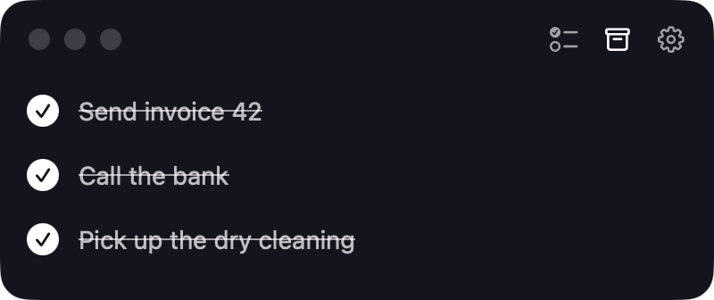
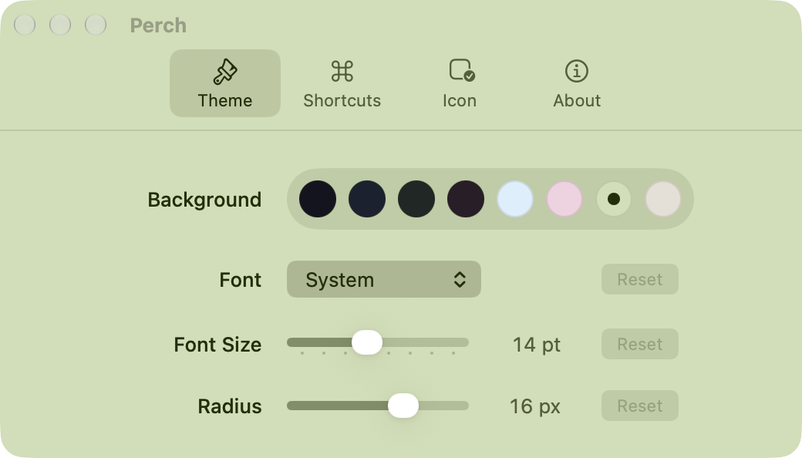

Keyboard first
Return adds a todo below. Arrows move between rows. Shift selects more. ⌘↩ completes, ⌘⌫ deletes, ⌘Z undoes anything.
Free for macOS 26
Perch is a small panel that floats above your work. Type a todo, press Return, get back to it. No projects, no due dates, no tags. Just the list you would otherwise write on paper.
Requires macOS 26 on Apple silicon. Updates itself.

Return adds a todo below. Arrows move between rows. Shift selects more. ⌘↩ completes, ⌘⌫ deletes, ⌘Z undoes anything.
The panel grows and shrinks with your list, so it never wastes space and never needs a scroll bar.
Priorities change during the day. Drag a todo, or press ⌥⌘↑ and ⌥⌘↓.
⌃⌥Space shows the panel from any app with a new todo ready to type. Press it again to put it away, or pick your own shortcut in Settings.
Completed todos move to the Archive, newest first. Click the check to bring one back.
Eight themes, four fonts, the text size, the corner radius, and an app icon to match.


Your todos stay on your Mac. Perch has no account, no server, and no tracking. The code is on GitHub under the MIT License.
Download Perch